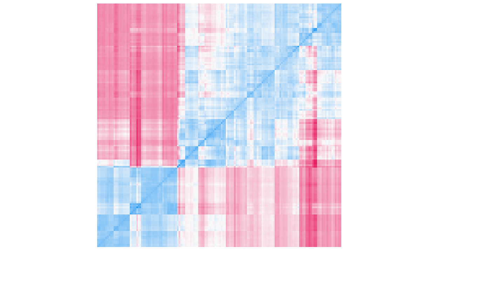

R/check_clusterstructure.R
check_clusterstructure.RdThis checks whether the data is appropriate for clustering using the Hopkins' H statistic of given data. If the value of Hopkins statistic is close to 0 (below 0.5), then we can reject the null hypothesis and conclude that the dataset is significantly clusterable. A value for H lower than 0.25 indicates a clustering tendency at the 90% confidence level. The visual assessment of cluster tendency (VAT) approach (Bezdek and Hathaway, 2002) consists in investigating the heatmap of the ordered dissimilarity matrix. Following this, one can potentially detect the clustering tendency by counting the number of square shaped blocks along the diagonal.
check_clusterstructure(x, standardize = TRUE, distance = "euclidean", ...)
| x | A data frame. |
|---|---|
| standardize | Standardize the dataframe before clustering (default). |
| distance | Distance method used. Other methods than "euclidean" (default) are exploratory in the context of clustering tendency. See |
| ... | Arguments passed to or from other methods. |
The H statistic (numeric)
Lawson, R. G., & Jurs, P. C. (1990). New index for clustering tendency and its application to chemical problems. Journal of chemical information and computer sciences, 30(1), 36-41.
Bezdek, J. C., & Hathaway, R. J. (2002, May). VAT: A tool for visual assessment of (cluster) tendency. In Proceedings of the 2002 International Joint Conference on Neural Networks. IJCNN02 (3), 2225-2230. IEEE.
#> # Clustering tendency #> #> The dataset is suitable for clustering (Hopkins' H = 0.18). #>